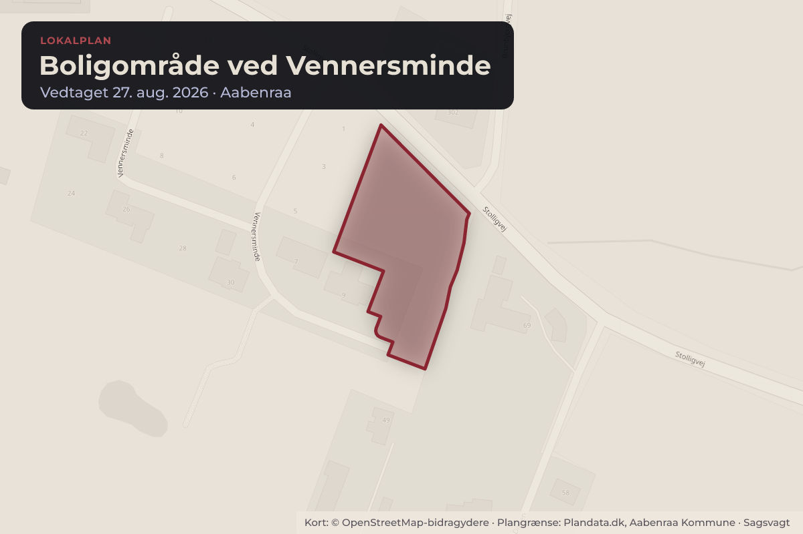
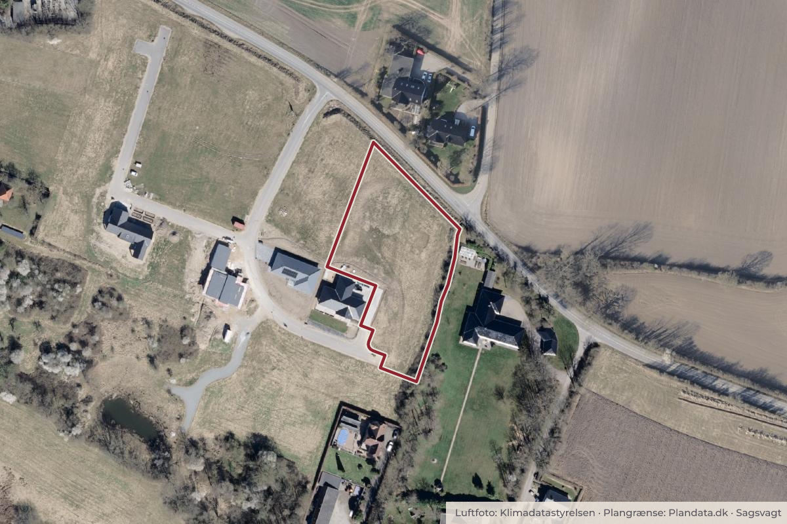

Besluttet 18. august, Økonomiudvalget, Aabenraa
Godkendelse af endelig vedtagelse af lokalplan for et boligområde ved Vennersminde
Plan, Teknik & Miljø indstiller, at løsningsforslag 1 godkendes, idet lokalplan nr. 194 vedtages endeligt med de mindre ændringer, som er foreslået i høringsnotat af 22. juni 2026.

Kort: © OpenStreetMap-bidragydere. Plangrænse: Plandata.dk, Aabenraa Kommune.

Har du et billede fra Boligområde ved Vennersminde? Send det til os
Kort fortalt
- Hvem
- Økonomiudvalget, Aabenraa Kommune
- Hvornår
- Tirsdag 18. august 2026
- Status
- Besluttet. Anbefales godkendt.
Læs hele sagen Kommunens egen tekst
Sagsfremstilling
I denne sag lægges der op til godkendelse og endelig vedtagelse af Lokalplan nr. 194
Boligområde ved Vennersminde.
Lokalplanen har til formål at give mulighed for opførelse af én bolig på et areal øst for den
nuværende boligudstykning ved Vennersminde samt at overføre arealet fra landzone til
byzone.
Forslag til Lokalplan nr. 194 har været fremlagt i offentlig høring i fire uger fra den 21. april
I høringsperioden indkom der tre høringssvar, som er resumeret i høringsnotat af 22. juni 2026.
Forvaltningen har en enkelt rettelse i formålsbestemmelserne.
Høringssvarene fra områdets naboer og beboere omhandler følgende temaer:
Bekymring for vandproblemer og vurdering af, at området er uegnet til byggeri
Byggeriets landskabelige og visuelle konsekvenser
Manglende visualisering af byggemuligheder
Konflikt med tidligere planlægning af området
Risici for natur, naboer og kulturarv
Beboerne opfordrer Byrådet til at afvise lokalplanen og fastholde gældende Lokalplan nr. 115
samt at bevare området som grønt areal i landzone.
Museum Sønderjylland har i sit høringssvar oplyst, at området er frigivet i forhold til arkæologi.
Høringssvarene er vurderet i høringsnotatet.
Der foreligger tre løsningsforslag:
1. At vedtage lokalplanen endeligt uden ændringer, dog med mindre justeringer som
fremgår af høringsnotat af 22. juni 2026.
2. At vedtage lokalplanen endeligt med større ændringer med henblik på at imødekomme
dele af indsigelserne.
3. At undlade at vedtage lokalplanen, som det er foreslået af beboere i området.
Bygherre har fået forelagt de indkomne høringssvar og ønsker ikke, at de muligheder, som
lokalplanforslaget giver, reduceres.
Høringssvarene giver ikke anledning til at ændre forvaltningens anbefaling om at vedtage
lokalplanen. Forvaltningen indstiller, at der alene foretages mindre ændringer, som fremgår af
høringsnotat af 22. juni 2026.
Forvaltningen vurderer, at de foreslåede ændringer ikke er af et sådant omfang, at
planforslaget skal sendes i fornyet høring.
Screeningsafgørelse
Forslaget til lokalplan er screenet i henhold til lov om miljøvurdering af planer og programmer
og af konkrete projekter.
Byrådet besluttede, at der ikke skulle udarbejdes en miljøvurdering af planen. Afgørelsen blev
offentliggjort sammen med lokalplanforslaget og kunne påklages til Planklagenævnet inden fire
uger fra offentliggørelsen.
Afgørelsen er ikke blevet påklaget inden fristens udløb.
Planmæssige forhold
Lokalplanen er i overensstemmelse med kommuneplanrammerne i Kommuneplan 2025.
Området overføres fra landzone til byzone med den endelige vedtagelse af lokalplan nr. 194.
En mindre del af området er omfattet af fortidsmindebeskyttelseslinje, og hele området er
omfattet af skovbyggelinje.
Byggeri og visse anlæg inden for byggelinjerne forudsætter dispensation for
naturbeskyttelsesloven. Kommunen er myndighed.
Sagen afgøres i
Byrådet.
Indstilling
Plan, Teknik & Miljø indstiller,
at løsningsforslag 1 godkendes, idet lokalplan nr. 194 vedtages endeligt med de mindre
ændringer, som er foreslået i høringsnotat af 22. juni 2026.
Behandling i Plan- og Boligudvalget 10. august 2026
Anbefales godkendt.
Beslutning
Anbefales godkendt.
Afbud: Ida Smed (Æ).
Kilde: Aabenraa Kommune, Økonomiudvalget, referat fra mødet tirsdag 18. august 2026, punkt 6. Læs den originale sag hos kommunen.